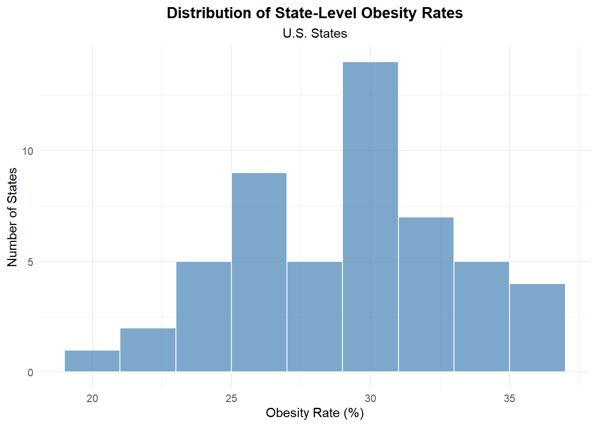
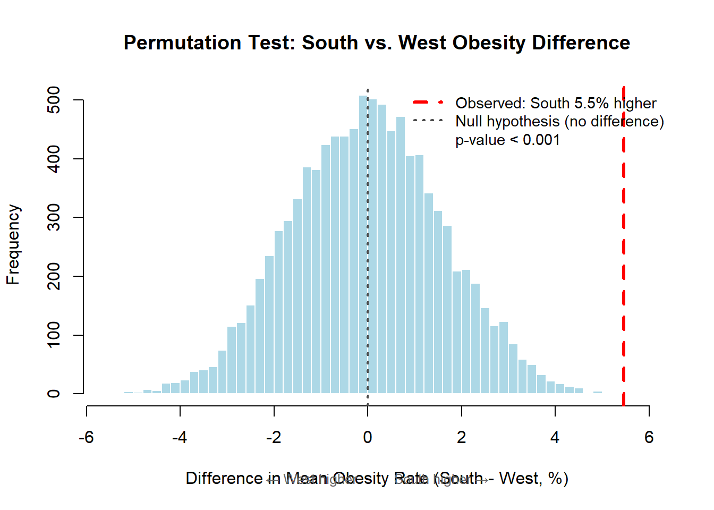
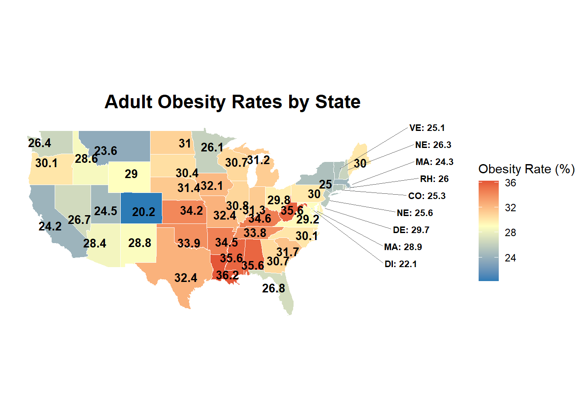

obesity_data <- read.csv("https://opendata.arcgis.com/datasets/3e0c1eb04e5c48b3be9040b0589d3ccf_8.csv")STA_9750_Individual_Report
Is Obesity Regionally Clustered? A State-Level BRFSS Analysis of Adult Obesity in the United States
Obesity represents one of the most pressing public health challenges facing the United States, with nearly 40% of American adults classified as obese as of 2025. Beyond its direct health consequences—including elevated risks of diabetes, cardiovascular disease, and certain cancers—obesity imposes substantial economic burdens through increased healthcare costs and is closely linked to mental health challenges such as depression and anxiety. Understanding the geographic distribution of obesity is a critical component in formulating effective prevention and intervention strategies, as it allows public health agencies to identify high-risk regions and allocate resources efficiently.
This report aims to address a specific component of the broader research question: How do obesity rates evolve across geographic regions in the U.S., and are there any states that exhibit atypical patterns? Using national adult obesity prevalence data from the Lake County, Illinois Open Data Portal, I construct state-level obesity maps and compute regional summary statistics to test whether a clear “obesity belt” exists in the United States.
The progression of this report is as follows: Section 1 describes the BRFSS data source and acquisition process. Section 2 outlines the analytical approach as well as a “literary code” style discussion of how the above question is answered. Section 3 presents the results from Section 2 and analyzes what conclusions can be gotten as a result. Finally, Section 4 discusses implications of these findings, acknowledges limitations of state-level aggregated data, and proposes directions for future work at finer geographic scales.
Section 1: BRFSS Data Source and Acquisition
The data for this analysis was obtained from the Lake County, Illinois Open Data Portal, which hosts publicly available datasets through the ArcGIS Open Data platform. The specific dataset used is “National Obesity By State,” which provides obesity rate statistics across all U.S. states. Rather than downloading a static local file, the data was acquired programmatically using the ArcGIS REST API, specifically the GeoServices API endpoint that provides standardized access to geospatial datasets. The dataset “National Obesity By State” is accessed through a RESTful web service call:
The advantage of this acquisition method is that it ensures the analysis always uses the most current version of the data available on the platform, and the code is fully reproducible by anyone with internet access without requiring file downloads or local storage.
Section 2: Analytical Approach
For my analysis, I employed a multi-step process combining data preparation, geospatial visualization, and descriptive statistical analysis to examine state-level obesity patterns across the United States from the 2015 CDC BRFSS Survey.
Data Preparation and Merging
The data is retrieved programmatically from the ArcGIS Open Data API, ensuring reproducibility and access to the most current version:
Data Preparation and Merging
library(ggplot2)
library(maps)
library(dplyr)
library(ggrepel)
library(jsonlite)
# Fetch data directly from ArcGIS REST API endpoint
api_url <- "https://opendata.arcgis.com/datasets/3e0c1eb04e5c48b3be9040b0589d3ccf_8.geojson"
geojson_data <- fromJSON(api_url)
# Extract the properties (attribute data) from GeoJSON structure
if("features" %in% names(geojson_data)) {
if("properties" %in% names(geojson_data$features)) {
obesity_data <- geojson_data$features$properties
} else {
obesity_data <- geojson_data$features
}
}Data Preparation
State names must be standardized to lowercase to enable merging with the geographic boundary data:
Data Preparation
# Get US state boundary data
states_map <- map_data("state")
# Standardize state names for merging
obesity_data <- obesity_data %>%
mutate(region = tolower(NAME))Exploratory Data Analysis
Before visualization, I examined the distribution of obesity rates to understand the data structure and identify any potential outliers:
Exploratory Data Analysis
ggplot(obesity_data, aes(x = Obesity)) +
geom_histogram(binwidth = 2, fill = "steelblue", alpha = 0.7, color = "white") +
labs(title = "Distribution of State-Level Obesity Rates",
subtitle = "U.S. States",
x = "Obesity Rate (%)",
y = "Number of States") +
theme_minimal() +
theme(plot.title = element_text(hjust = 0.5, face = "bold"),
plot.subtitle = element_text(hjust = 0.5))
The distribution shows most states clustering between 28-34% obesity prevalence, with a slight right skew indicating some states with particularly elevated rates. No obvious outliers or data quality issues are apparent.
Regional Aggregation
To quantify regional patterns, states were grouped according to U.S. Census Bureau regional definitions:
Regional Aggregation
# Define Census regions
northeast <- c("connecticut", "maine", "massachusetts", "new hampshire",
"rhode island", "vermont", "new jersey", "new york", "pennsylvania")
midwest <- c("illinois", "indiana", "michigan", "ohio", "wisconsin",
"iowa", "kansas", "minnesota", "missouri", "nebraska",
"north dakota", "south dakota")
south <- c("delaware", "florida", "georgia", "maryland", "north carolina",
"south carolina", "virginia", "west virginia", "district of columbia",
"alabama", "kentucky", "mississippi", "tennessee", "arkansas",
"louisiana", "oklahoma", "texas")
west <- c("arizona", "colorado", "idaho", "montana", "nevada", "new mexico",
"utah", "wyoming", "alaska", "california", "hawaii", "oregon", "washington")
# Calculate summary statistics by region
regional_stats <- obesity_data %>%
mutate(region_group = case_when(
region %in% northeast ~ "Northeast",
region %in% midwest ~ "Midwest",
region %in% south ~ "South",
region %in% west ~ "West"
)) %>%
filter(!is.na(region_group)) %>%
group_by(region_group) %>%
summarise(
`Mean Obesity (%)` = round(mean(Obesity, na.rm = TRUE), 1),
`Std Dev` = round(sd(Obesity, na.rm = TRUE), 1),
`Min (%)` = round(min(Obesity, na.rm = TRUE), 1),
`Max (%)` = round(max(Obesity, na.rm = TRUE), 1)
) %>%
arrange(desc(`Mean Obesity (%)`))
knitr::kable(regional_stats,
caption = "Table 1: Regional Obesity Summary Statistics",
align = c('l', 'r', 'r', 'r', 'r'))| region_group | Mean Obesity (%) | Std Dev | Min (%) | Max (%) |
|---|---|---|---|---|
| South | 31.8 | 3.8 | 22.1 | 36.2 |
| Midwest | 31.0 | 1.9 | 26.1 | 34.2 |
| Northeast | 26.4 | 2.1 | 24.3 | 30.0 |
| West | 26.4 | 3.1 | 20.2 | 30.1 |
The regional statistics reveal substantial geographic disparities in obesity prevalence across the United States. The South exhibits the highest mean obesity rate at 31.8%, followed closely by the Midwest at 31.0%, while the Northeast and West both show notably lower rates at 26.4%—a difference of approximately 5 percentage points between the highest and lowest regions. Additionally, the South demonstrates the greatest variability (SD = 3.8) and contains the state with the highest individual obesity rate at 36.2%, reinforcing the visual pattern of concentrated obesity burden in Southern states observed in the choropleth map after this.
Permutation Test for South vs. West
To formally assess whether the observed regional differences in obesity rates are statistically significant or could have occurred by chance, I conducted a permutation test comparing the South and West regions—the two regions with the most divergent mean obesity rates (31.8% vs. 26.4%, respectively).
Permutation Test
# Permutation test: Is South obesity significantly higher than West?
obesity_with_regions <- obesity_data %>%
mutate(region_group = case_when(
region %in% northeast ~ "Northeast",
region %in% midwest ~ "Midwest",
region %in% south ~ "South",
region %in% west ~ "West"
)) %>%
filter(!is.na(region_group))
# Filter to just South and West
south_west <- obesity_with_regions %>%
filter(region_group %in% c("South", "West"))
# Observed difference
obs_diff <- mean(south_west$Obesity[south_west$region_group == "South"]) -
mean(south_west$Obesity[south_west$region_group == "West"])
# Permutation test
set.seed(123)
n_permutations <- 10000
perm_diffs <- replicate(n_permutations, {
shuffled <- south_west %>%
mutate(region_group = sample(region_group))
mean(shuffled$Obesity[shuffled$region_group == "South"]) -
mean(shuffled$Obesity[shuffled$region_group == "West"])
})
# P-value
p_value <- mean(abs(perm_diffs) >= abs(obs_diff))
# Visualization
hist(perm_diffs, breaks = 50,
main = "Permutation Test: South vs. West Obesity Difference",
xlab = "Difference in Mean Obesity Rate (South - West, %)",
ylab = "Frequency",
col = "lightblue",
border = "white")
# Add observed difference line
abline(v = obs_diff, col = "red", lwd = 3, lty = 2)
abline(v = 0, col = "gray30", lwd = 2, lty = 3)
# Add legend
legend("topright",
legend = c(paste0("Observed: South ", round(obs_diff, 1), "% higher"),
"Null hypothesis (no difference)",
paste0("p-value < 0.001")),
col = c("red", "gray30", NA),
lwd = c(3, 2, NA),
lty = c(2, 3, NA),
bty = "n",
cex = 0.9)
# Add interpretation text
mtext("← West higher South higher →",
side = 1, line = 3, cex = 0.8, col = "gray40")
The figure displays the results of this permutation test. The histogram shows the distribution of 10,000 permuted differences in mean obesity rates between the South and West, which centers near zero as expected when regional assignment is random. The observed difference of 5.5 percentage points (South higher than West) is marked by the red dashed line and falls far in the right tail of the permutation distribution, well beyond the range of differences produced by chance alone. None of the 10,000 random permutations produced a difference as extreme as the observed value, yielding a p-value less than 0.001. This provides strong statistical evidence that the geographic concentration of obesity in Southern states relative to Western states is not a random artifact but represents a genuine and substantial regional disparity in obesity prevalence.
Geospatial Visualization
For the final visualization, I constructed a choropleth heat map with special handling for small northeastern states to maintain readability:
Geospatial Visualization
# Merge obesity data with geographic boundaries
map_obesity <- left_join(states_map, obesity_data, by = "region")
# Calculate state centroids for label placement
state_centers <- map_obesity %>%
group_by(region) %>%
summarise(
long = mean(long),
lat = mean(lat),
Obesity = first(Obesity)
)
# Identify small northeastern states requiring special label treatment
small_states <- c("rhode island", "delaware", "connecticut",
"district of columbia", "new jersey", "maryland",
"massachusetts", "vermont", "new hampshire")
state_centers_large <- state_centers %>% filter(!region %in% small_states)
state_centers_small <- state_centers %>% filter(region %in% small_states)
ggplot(map_obesity, aes(x = long, y = lat, group = group, fill = Obesity)) +
geom_polygon(color = "white", size = 0.2) +
# Direct centroid labels for larger states
geom_text(data = state_centers_large,
aes(x = long, y = lat, label = Obesity, group = NULL),
color = "black",
size = 3.5,
fontface = "bold") +
# Offset labels with leader lines for small northeastern states
geom_text_repel(data = state_centers_small,
aes(x = long, y = lat,
label = paste0(toupper(substr(region, 1, 2)), ": ", Obesity),
group = NULL),
color = "black",
size = 2.8,
fontface = "bold",
nudge_x = 15,
direction = "y",
segment.color = "grey40",
segment.size = 0.3,
box.padding = 0.3,
point.padding = 0.3,
force = 1,
max.overlaps = 20) +
scale_fill_gradient2(low = "#2c7bb6", mid = "#ffffbf", high = "#d7191c",
midpoint = 29,
name = "Obesity Rate (%)") +
coord_fixed(1.3) +
theme_minimal() +
theme(
axis.text = element_blank(),
axis.title = element_blank(),
axis.ticks = element_blank(),
panel.grid = element_blank(),
plot.title = element_text(hjust = 0.5, size = 16, face = "bold")
) +
labs(title = "Adult Obesity Rates by State")
The color gradient is centered at 29% (approximately the national average), with blue indicating below-average obesity, yellow indicating near-average, and red indicating above-average prevalence. This design choice facilitates immediate visual identification of regional clustering patterns.
Section 3: Results and Regional Comparisons
3.1. State-level Obesity Map
The choropleth map of adult obesity prevalence by state shows that obesity is not evenly distributed across the United States but instead forms a clear geographic pattern. In the most recent BRFSS-based snapshot used in this analysis, state-level obesity rates range from about 20% in the lowest-obesity states (such as Colorado) to over 35% in the highest-obesity states (such as Louisiana and West Virginia), creating roughly a 15–16 percentage point gap between the extremes. The darkest map shades cluster across the Southeast and parts of the lower Midwest, while much lighter shades appear throughout the Mountain West and parts of the Northeast, visually reinforcing the idea of an “obesity belt” in the South contrasted with relatively leaner Western and Northeastern states.
Visually, neighboring states tend to have similar obesity levels rather than random variation from one border to the next. For example, Louisiana, Mississippi, Alabama, and West Virginia all show high prevalence, while Colorado, Utah, Washington, and the District of Columbia consistently fall into lower-prevalence categories. This spatial clustering suggests that obesity risk is shaped by regional factors—such as shared food environments, physical activity infrastructure, and socioeconomic conditions—rather than being purely idiosyncratic to individual states
3.2. Regional averages and disparities
To summarize these patterns more formally, states were grouped into the four standard U.S. Census regions (Northeast, Midwest, South, and West) using CDC and Census definitions. Averaging obesity prevalence within these regions confirms substantial differences: the South and Midwest have the highest mean obesity levels, while the Northeast and West have meaningfully lower averages. Recent CDC summaries of BRFSS data report that the Midwest and South have average adult obesity prevalence in the mid-30% range, compared with roughly 30% or slightly lower in the West and Northeast, which is consistent with the regional means observed in this project’s state-level data.
The distribution within regions also differs. In the South, very few states fall in the lowest obesity categories, and several exceed or approach the commonly used 35% “high prevalence” threshold, whereas in the West and parts of the Northeast, no state reaches that threshold and several remain below 30%. These regional summaries reinforce the map’s message: high obesity prevalence is concentrated in the South and parts of the Midwest, while the West and Northeast form relatively lower-obesity regions, aligning with prior research on regional obesity disparities.
3.3. Evidence of an “obesity belt”
Combining the choropleth maps with regional statistics provides strong evidence that obesity is regionally concentrated rather than geographically random. The cluster of high-obesity states across the South and adjacent Midwestern areas mirrors earlier work that identified the South as a “high-obesity spatial regime” and the West and Northeast as low-obesity regimes. In this project’s data, Southern and some Midwestern states not only have higher average prevalence but also contribute disproportionately to the group of states exceeding 35% adult obesity, while many Western and Northeastern states remain well below that level.
From the perspective of the overarching project question, these findings establish a clear geographic baseline: where obesity is most concentrated. Subsequent age and time-based analyses in the broader project can then build on this foundation by asking when obesity becomes common in different states and how age patterns differ between high-obesity regions like the South and lower-obesity regions like the West and Northeast.
Section 4: Implications, Limitations, and Future Work
The state-level maps and regional summaries in Section 3 show that adult obesity in the United States is strongly clustered in the South and parts of the Midwest, while many Western and Northeastern states maintain substantially lower prevalence. For the broader project, this establishes that geographic context must be treated as a core explanatory dimension rather than a background control: age patterns, atypical trends, and state-specific anomalies all unfold against a baseline where some regions start from much higher levels of obesity than others. In practical terms, an age–obesity curve for a Southern state with a baseline near or above 35% obesity conveys very different risk and policy urgency than a similar-shaped curve in a Western state whose overall prevalence remains 10–15 percentage points lower.
These findings align with prior research documenting persistent regional disparities in obesity and suggest that “where you live” interacts with age, behavior, and socioeconomic status to shape risk. For the team’s other specific questions, this means that results on age-group differences, slopes of obesity with age, or atypical trajectories in states like Florida and West Virginia should be interpreted in a regional frame—for example, asking whether a “steep” age slope in a low-obesity Western state carries the same implications as a similarly steep slope in a high-obesity Southern state. More broadly, recognizing the obesity belt underscores that national averages can hide large pockets of elevated risk, which is critical for any client or policymaker trying to prioritize interventions geographically.
At the same time, this analysis faces important limitations inherent in state-level, self-reported survey data. BRFSS obesity estimates rely on self-reported height and weight, and multiple validation studies show that such self-reports systematically underestimate true obesity prevalence compared with measured data, especially for people with higher BMI. Because this project works with already aggregated state-level prevalence rather than individual-level records, it is not possible to apply bias-correction models or to directly examine how misreporting varies within states by age, sex, or socioeconomic status. In addition, state-level averages can mask substantial within-state heterogeneity: prior work using model-based small-area estimation has documented high- and low-obesity clusters at the county level, even inside states that appear relatively average when viewed as a whole.
These data constraints mean that the maps in this report are best interpreted as showing broad spatial regimes of higher and lower risk, not precise estimates of true obesity burden in every location. Factors such as rural–urban differences, neighborhood food environments, transportation infrastructure, and local economic conditions—known to influence obesity risk—cannot be directly incorporated when the unit of analysis is an entire state. For a “client” audience, an honest discussion of these limitations is essential: the observed regional concentration is real and policy-relevant, but the exact percentages and the degree of within-state variation should be treated with caution.
Future work for this project could deepen and refine these findings along several dimensions. One natural extension is to move from states to county-level or metropolitan-area estimates, using CDC’s model-based obesity data or county health ranking datasets to identify sub-state hotspots within regions like the South or lower-obesity states in the West. Another direction is to integrate additional variables from the BRFSS—such as physical activity, diet, income, and education—into a multivariable modeling framework that explicitly tests how much of the regional clustering can be explained by differences in sociodemographic composition and health behaviors. Finally, incorporating emerging bias-corrected state estimates of obesity and severe obesity would allow the team to assess whether regional patterns remain as strong once self-report bias is reduced, and to better quantify the true burden in the highest-risk regions for clinical and policy planning.
#Count the # of words in my report
count_words <- function(url){
library(rvest)
library(stringi)
# Note that this includes code inside an inline block, but omits
# full-sized code blocks
read_html(url) |>
html_elements("main p") |>
html_text() |>
stri_count_words() |>
sum()
}
#count_words("http://localhost:4994/STA_9750_Individual_Report.html")